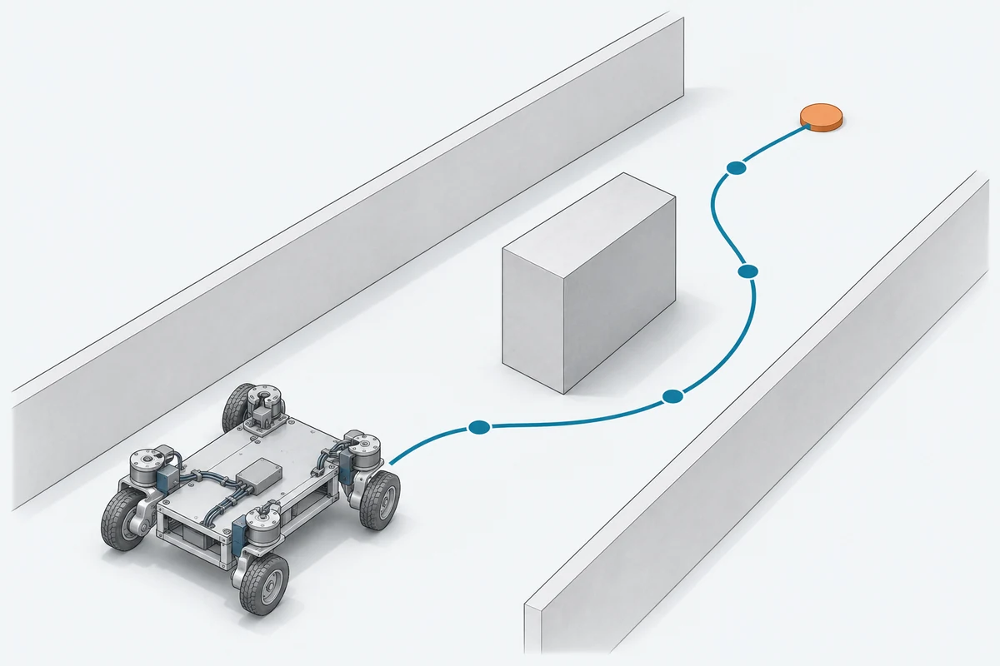

移动机器人导航与语音交互 Mobile robot navigation and voice interaction
开展移动机器人导航与语音交互开发，包括法奥四舵轮底盘的 Nav2 路径规划与跟踪，以及灵巧智能导览机器人的 ROS 2 语音交互和多站任务管理。Development spans Nav2 path planning and tracking for a FAIRINO base with four steerable wheels, and ROS 2 speech interaction and multi-stop task management for DexRobot’s tour-guide robot.

从一条直线到可跟踪的绕障路径From a straight line to a trackable detour
先检查车体能否通过Check clearance for the vehicle
起点和目标之间的直线提供最直接的候选路径。通行性判断还要考虑车体在地面上的轮廓。即使路线中心避开了障碍，车体边缘仍可能与之相交。The line between start and goal is the most direct candidate. Its clearance has to account for the vehicle footprint. An obstacle can intersect the side of the chassis even when it never crosses the path centreline.
把绕行结果交给跟踪器Turn a detour into tracking references
直线受阻时，Smac 从地图上搜索绕行路线。路径简化与重采样将疏密不同的路径点整理为间距较均匀的序列，全向前视控制器据此选择前方参考点并计算底盘运动指令。If the direct path is obstructed, Smac searches the map for a detour. Simplification and resampling produce waypoints at more regular intervals. The omnidirectional controller selects a lookahead point on that sequence to compute base motion commands.
让障碍在执行途中出现Introduce an obstruction during tracking
离线检查可以在已有路线中加入障碍，再观察规划分支是否切换、输出路径是否更新，以及反馈异常时控制器是否停止发出运动指令。这些记录检验了软件逻辑，实际舵轮的跟踪误差需要实车测量。An offline check can introduce an obstacle on an existing route and inspect the change in planning branch and output path. A separate feedback fault checks whether motion commands cease. These checks exercise the software logic. Wheel tracking error requires measurements on the physical base.
四舵轮底盘的 Nav2 路径规划Nav2 path planning for a four-wheel-steering base
法奥四舵轮底盘的 Nav2 规划器优先检查起点至目标点的直线路径。直线受阻时，Smac 规划器搜索绕障路线。路径经简化和重采样后，全向前视跟踪器沿间距较均匀的路径点计算底盘运动指令。The Nav2 planner for FAIRINO’s four-wheel-steering base first tests the straight path from start to goal. If an obstacle blocks that path, the Smac planner searches for a detour. Simplification and resampling provide regularly spaced waypoints from which an omnidirectional lookahead controller computes base motion commands.
全向跟踪与障碍重规划Omnidirectional tracking and obstacle-triggered replanning
跟踪控制器协调各舵轮转向，在接近终点时减速，并依据底盘足迹检查碰撞风险。新障碍阻断路径时触发重规划，反馈异常时停止输出运动指令。软件与离线测试覆盖规划和控制分支的触发条件、路径输出与异常处理。The tracking controller coordinates wheel steering, decelerates near the goal and checks for collisions using the chassis footprint. A newly obstructed path triggers replanning, and abnormal feedback inhibits motion commands. Software and offline tests covered planning and control branch conditions, the resulting paths and fault handling.
导览机器人的 ROS 2 语音交互ROS 2 speech interaction for a guide robot
开发 ROS 2 语音交互模块，集成音频预处理、语音识别、意图理解与语音播报。通过状态机管理唤醒、监听、播报和用户打断，在播报结束或中止后恢复监听。A ROS 2 speech interface integrates audio preprocessing, speech recognition, intent interpretation and spoken responses. A state machine manages wake-up, listening, playback and user interruptions, returning to listening when playback ends or is interrupted.
多站导览与任务中断处理Multi-stop tours and task interruption
基于 LangGraph 组织问答、对话与导航任务，支持单点导航、多站导览、到站讲解及站点切换。任务流程处理用户取消、超时返回和低电量事件，协调导航执行状态与语音播报。LangGraph organises question answering, dialogue and navigation, supporting single-destination navigation, multi-stop tours, narration on arrival and transitions between stops. Task handling coordinates navigation and speech during user cancellation, return on timeout and low-battery events.